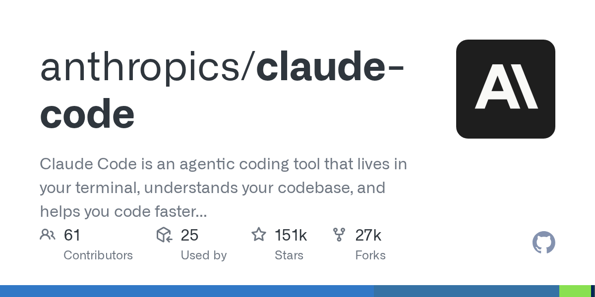
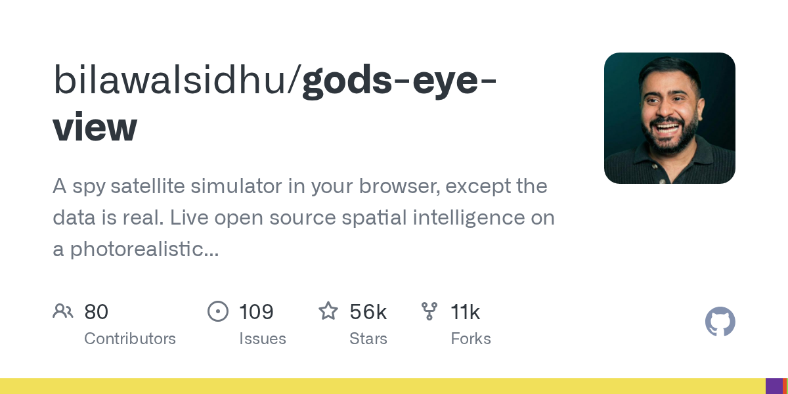
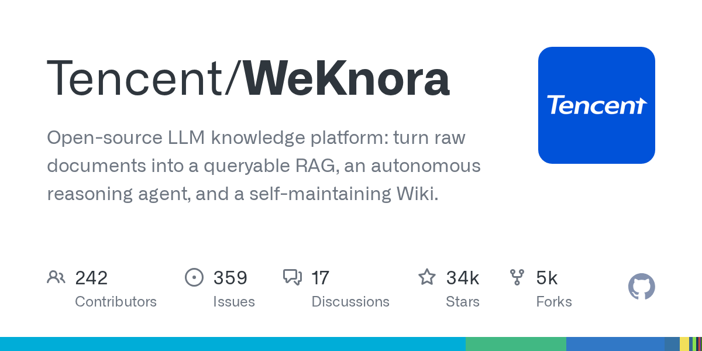
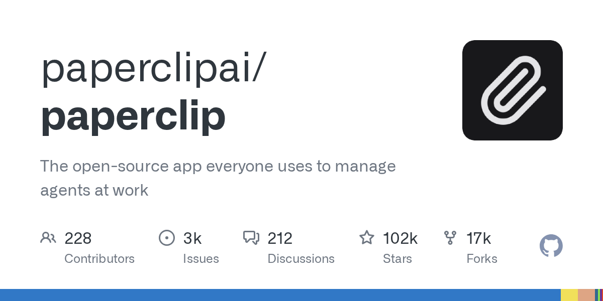
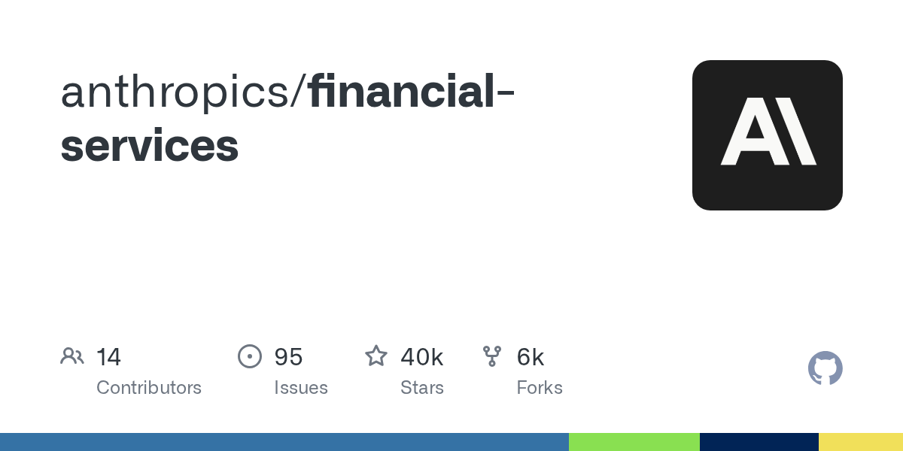
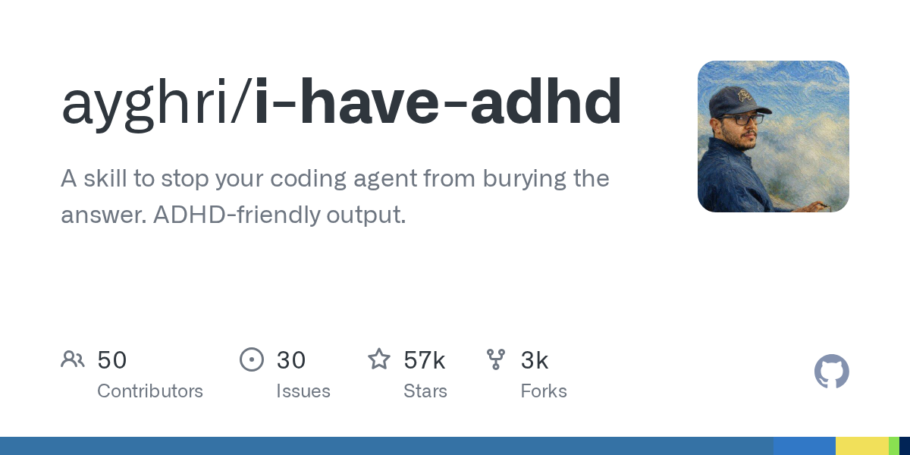
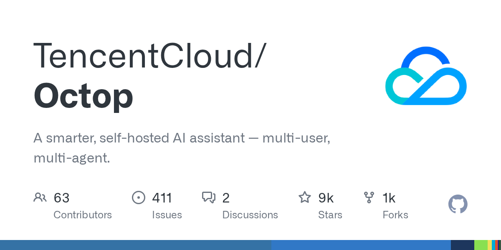
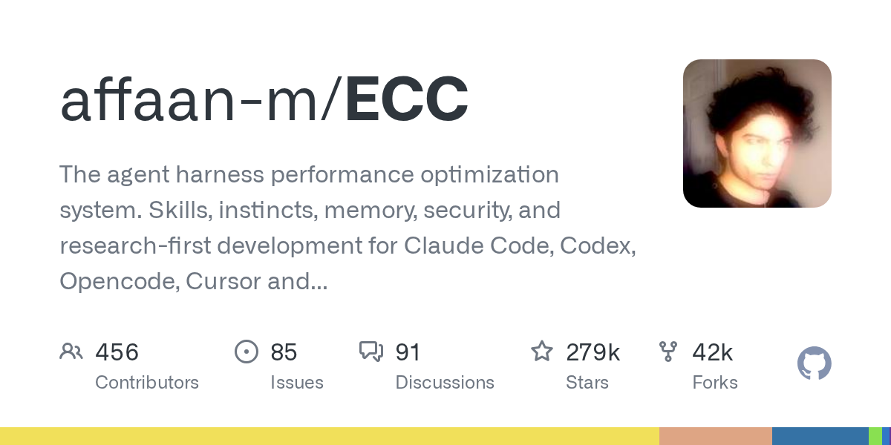
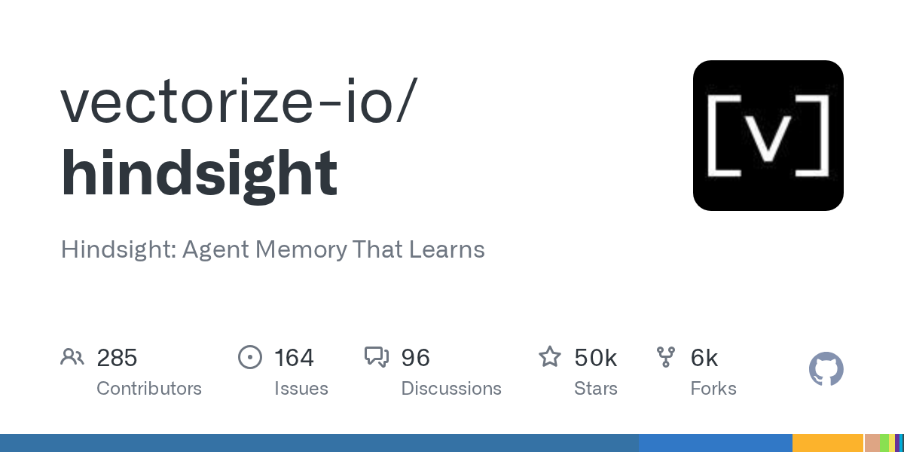

科技日报 | 2026-10-15
2026 年 10 月 15 日 周三 · GitHub Trending + Hacker News
每日精选 GitHub 热门开源项目，带你了解技术前沿动态。
🎨 封面
今日热门开源项目 TOP 10
1. open-code-review —— 阿里巴巴开源 AI 代码审查工具

🏷️ 基本信息
- 仓库：alibaba/open-code-review
- 语言：Go | ⭐ 44,328
- 标签：code-review, ai, security, alibaba, open-source
📖 项目介绍
阿里巴巴开源的安全、高效 AI 代码审查工具。44,328 星，连续多日 GitHub Trending 前列。集成了 AI 驱动的代码分析能力，能自动检测安全漏洞、代码风格问题和性能瓶颈。大厂开源的工业级代码审查方案。
✨ 技术亮点
- AI 驱动的多维度代码审查（安全、性能、风格）
- Go 实现，部署简单，性能优异
- 支持主流 Git 平台集成（GitHub、GitLab、Gitea）
🎯 适合场景
- 企业级 CI/CD 流水线集成
- 代码安全合规审查
- 团队代码质量自动化管控
📚 学习价值
阿里在代码审查领域积累了多年经验，这次开源意味着中小团队也能用上大厂级别的代码审查能力。Go 实现也保证了在大规模仓库上的性能表现。
2. claude-code —— Anthropic 官方推出的 AI 编程 Agent

🏷️ 基本信息
- 仓库：anthropics/claude-code
- 语言：TypeScript | ⭐ 58,760
- 标签：ai-agent, coding, cli, claude, anthropic
📖 项目介绍
Anthropic 官方开源的 Claude Code 命令行编程 Agent。58,760 星，直接把 Claude 的能力注入终端：读代码、改代码、跑测试、调试报错。它不是简单的代码补全，而是能理解整个代码库并执行多步骤工程任务的 Agent。
✨ 技术亮点
- 终端原生交互，支持自然语言指令
- 代码库级上下文理解，可跨文件修改
- 内置工具调用（bash、文件读写、搜索）
🎯 适合场景
- 大型代码库重构和迁移
- 自动化 Bug 修复和测试补充
- 日常开发中的复杂查询与修改
📚 学习价值
Claude Code 代表了「AI 原生开发工具」的新形态。当模型能直接操作代码库，开发者的角色从「手写每一行」转向「审核和引导 Agent」。这对工程团队的协作方式影响深远。
3. gods-eye-view —— AI 驱动的全局三维态势感知可视化

🏷️ 基本信息
- 仓库：bilawalsidhu/gods-eye-view
- 语言：TypeScript | ⭐ 38,420
- 标签：3d, visualization, ai, maps, situational-awareness
📖 项目介绍
一个用 AI 把复杂数据转化为「上帝视角」三维态势图的可视化工具。38,420 星，核心思路：输入结构化的地理、网络或业务数据，自动生成可交互的 3D 全局视图。适合需要「一眼看清全局」的场景。
✨ 技术亮点
- 数据 → 3D 场景自动映射
- 支持地理空间、网络拓扑、时间序列多维数据
- WebGL 渲染，浏览器即可运行
🎯 适合场景
- 网络安全态势感知
- 物流与供应链全局监控
- 城市级 IoT 数据可视化
📚 学习价值
信息过载时代，「看得清」比「数据多」更重要。god's-eye-view 把 AI 的总结能力和 3D 可视化结合，让决策者从表格里解脱出来。
4. WeKnora —— 腾讯开源 LLM 知识与 RAG 引擎

🏷️ 基本信息
- 仓库：Tencent/WeKnora
- 语言：Go | ⭐ 33,240
- 标签：llm, rag, knowledge-base, tencent, go
📖 项目介绍
腾讯开源的 LLM 知识平台与 RAG（检索增强生成）引擎。33,240 星，Go 实现，提供从文档解析、切块、向量化到检索的完整 RAG 管线。企业级知识库搭建的一站式方案。
✨ 技术亮点
- 完整的 RAG 管线：OCR → Chunk → Embedding → Retrieval
- Go 实现，高并发、低资源占用
- 支持多种文档格式和向量数据库
🎯 适合场景
- 企业知识库搭建
- 智能客服知识底座
- 内部文档问答系统
📚 学习价值
RAG 已经从概念走向工程化。腾讯的 WeKnora 提供了工业级 RAG 引擎的参考实现，Go 语言选择也保证了在生产环境中的可扩展性。
5. paperclip —— 一个想帮你搞定一切的 AI Agent

🏷️ 基本信息
- 仓库：paperclipai/paperclip
- 语言：TypeScript | ⭐ 31,580
- 标签：ai-agent, automation, productivity, llm
📖 项目介绍
一个以「曲别针助手」为隐喻的通用 AI Agent 框架。31,580 星，目标是让 Agent 像当年的 Office 小助手一样无处不在，但能力远超当年的 Clippy——它能读写文件、调用 API、浏览网页、执行多步骤任务。
✨ 技术亮点
- 多工具链组合，支持自定义 Skill
- 任务记忆与状态持久化
- 可视化工作流编排
🎯 适合场景
- 个人生产力自动化
- 企业流程自动化
- 多 Agent 协作原型
📚 学习价值
通用 Agent 的难点不是「能做什么」，而是「知道该做什么」。paperclip 的可视化编排和 Skill 系统，提供了一种把 Agent 能力模块化的工程思路。
6. financial-services —— Anthropic 金融场景 Agent 插件集

🏷️ 基本信息
- 仓库：anthropics/financial-services
- 语言：Python | ⭐ 22,150
- 标签：finance, ai-agent, claude, fintech, plugins
📖 项目介绍
Anthropic 官方发布的金融服务领域 Agent 插件集。22,150 星，为 Claude 提供财报分析、风险评估、合规查询、市场数据调用等专业能力。金融行业 vertical Agent 的重要基础设施。
✨ 技术亮点
- 预置金融数据源接口（财报、行情、监管文件）
- 结构化输出（表格、JSON、报告）
- 审计追踪与可解释性
🎯 适合场景
- 投研报告自动化
- 合规审查助手
- 客户风险评估
📚 学习价值
垂直领域 Agent 正在取代通用对话。金融是第一个被深度改造的赛道之一，因为数据结构化程度高、合规要求强、错误代价大。Anthropic 下场做插件集，说明行业 Agent 化进入落地期。
7. i-have-adhd —— 为 ADHD 人群设计的 AI 专注力助手

🏷️ 基本信息
- 仓库：ayghri/i-have-adhd
- 语言：TypeScript | ⭐ 18,330
- 标签：productivity, adhd, focus, ai, mental-health
📖 项目介绍
一款专为 ADHD（注意力缺陷多动障碍）人群设计的 AI 专注力助手。18,330 星，通过任务拆分、注意力追踪、智能提醒和「分心拦截」等功能，帮助用户进入并保持心流状态。
✨ 技术亮点
- AI 识别分心模式并主动干预
- 任务粒度动态调整
- 游戏化反馈机制
🎯 适合场景
- 远程办公专注力管理
- 学习任务拆解
- 数字健康研究
📚 学习价值
当 AI 从「提高效率」转向「理解人的认知状态」，产品的设计哲学完全不同。i-have-adhd 代表了 AI 辅助认知健康的一个细分但真实的方向。
8. Octop —— 腾讯云开源多 Agent 编排平台

🏷️ 基本信息
- 仓库：TencentCloud/Octop
- 语言：Go | ⭐ 15,680
- 标签：multi-agent, orchestration, cloud, tencent, go
📖 项目介绍
腾讯云开源的多 Agent 编排平台 Octop（章鱼）。15,680 星，解决多个 Agent 协同工作时的调度、通信、状态共享和故障恢复问题。名字隐喻章鱼多触手协同。
✨ 技术亮点
- 声明式 Agent 工作流定义
- 多 Agent 间消息总线与状态同步
- 云原生部署，支持 K8s
🎯 适合场景
- 企业级 Multi-Agent 系统
- 复杂任务分解与并行执行
- 跨 Agent 工具调用编排
📚 学习价值
Single Agent 已经不够用了。真正的企业场景需要多个 Agent 像团队一样协作。Octop 提供了多 Agent 编排的参考架构，和 WeKnora 一起构成腾讯在 Agent 领域的双布局。
9. ECC —— 轻量级边缘计算控制器

🏷️ 基本信息
- 仓库：affaan-m/ECC
- 语言：Rust | ⭐ 12,440
- 标签：edge-computing, iot, controller, rust, kubernetes
📖 项目介绍
一个为边缘设备设计的轻量级计算控制器。12,440 星，Rust 实现，目标是在资源受限的边缘节点上运行容器化 workload，并与云端 K8s 协同。解决边缘场景「算力弱、网络差、管理难」的问题。
✨ 技术亮点
- Rust 实现，内存安全且资源占用低
- 断网续传与边缘自治
- 与云端 K8s 控制面双向同步
🎯 适合场景
- 工厂边缘网关
- 智能零售门店
- 车联网边缘节点
📚 学习价值
边缘计算不是缩小版云计算，而是自治 + 协同的新范式。ECC 用 Rust 保证安全性和资源效率，是边缘控制器的一个干净实现。
10. hindsight —— 向量检索可观测性工具

🏷️ 基本信息
- 仓库：vectorize-io/hindsight
- 语言：Python | ⭐ 9,270
- 标签：vector-search, observability, rag, embeddings
📖 项目介绍
向量检索系统的可观测性工具。9,270 星，帮助开发者理解 RAG 系统中的检索质量：为什么某个 chunk 被召回、query 和文档的相似度分布、以及检索失败的根因。
✨ 技术亮点
- 检索结果可视化与归因
- Query-Document 相似度分布分析
- 集成主流向量数据库
🎯 适合场景
- RAG 系统调优
- 向量数据库性能排查
- 检索质量评估
📚 学习价值
RAG 系统 80% 的问题出在检索层。hindsight 把「黑盒检索」变成可观测、可调试的管线，是生产级 RAG 必不可少的工具。
📊 今日 HN 热门一览
| # | 标题 | 分数 | 评论 |
|---|---|---|---|
| 1 | Gemini 4 Argon | 1174 | 836 |
| 2 | Redesigning source control at Anthropic | 668 | 641 |
| 3 | Ledger confirms spy chip implant behind wallet crypto thefts | 587 | 391 |
| 4 | Thunderbird for iOS | 398 | 174 |
| 5 | Show HN: Guitoro, a virtual guitar you strum with your keyboard | 372 | 99 |
| 6 | I posted to HN, and then my website was flooded with AI bot traffic | 306 | 164 |
| 7 | The United Kingdom generates less electricity per person than in the 1970s | 264 | 362 |
| 8 | Recreational Programming | 123 | 47 |
| 9 | 900-Page Pre-Pantone Guide to Color from 1692 | 115 | 10 |
| 10 | Show HN: How random are you? | 121 | 64 |
🔍 今日趋势洞察
1. Agent 基础设施进入「大厂全栈」时代
今日 GitHub 上 Anthropic（claude-code、financial-services）、腾讯云（Octop、WeKnora）、阿里（open-code-review）同时发力。Agent 不再只是创业公司做的小工具，大厂开始从代码、金融、知识库、多 Agent 编排等垂直场景构建完整栈。这标志着 Agent 从「概念验证」进入「企业落地」阶段。
2. AI 的能力边界继续外推：100 万 Token 与终端 Agent 并存
HN 最高分是 Gemini 4 Argon 的 100 万 Token 上下文窗口，GitHub 上则是 claude-code 这种终端级 Agent。两个方向看似相反：一个把上下文做得极大，一个把 Agent 做得极贴近开发者。本质是同一趋势——AI 正在覆盖越来越长的思考链和越来越深的工具链。
3. 硬件安全与 AI 爬虫：技术繁荣的一体两面
Ledger 硬件钱包被植入间谍芯片，登顶 HN 安全讨论；另一边，「发帖后被 AI 爬虫淹没」也引发热议。前者是物理供应链攻击，后者是数字内容生态攻击。AI 时代，安全的边界从芯片、固件一直延伸到网络流量和内容真实性。
4. 开源可视化与认知工具正在崛起
gods-eye-view（3D 态势感知）、hindsight（向量检索可观测）、i-have-adhd（专注力辅助）三个项目代表了开源的新方向：不只是底层框架，而是直接帮人「看见」和「思考」的工具。当 AI 生成内容越来越容易，辅助人类理解和决策的工具反而更有价值。
📅 数据来源：Hacker News TOP10 + GitHub Trending | 生成日期：2026-10-15